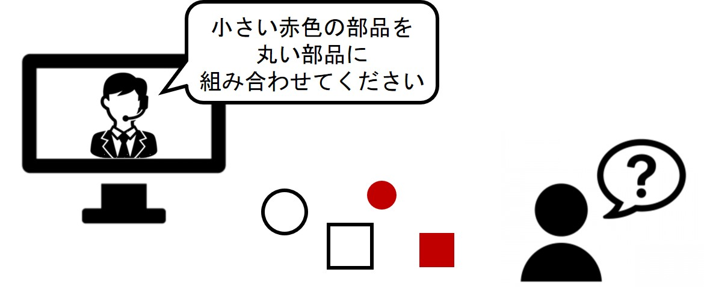
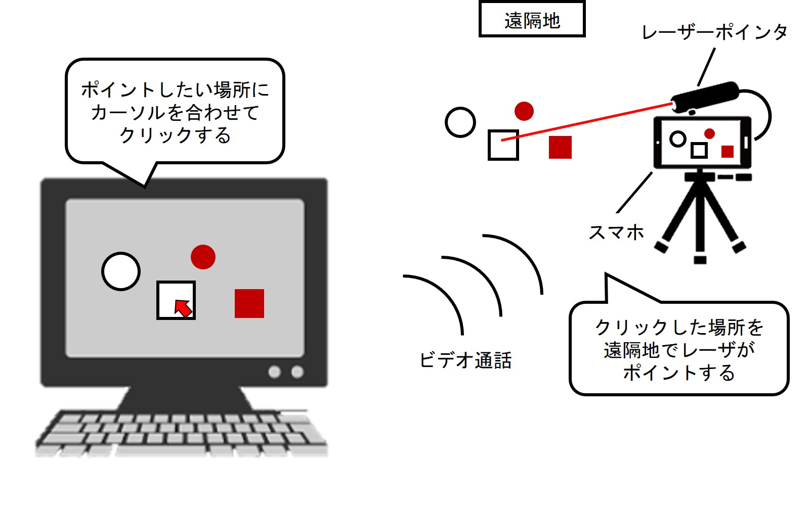
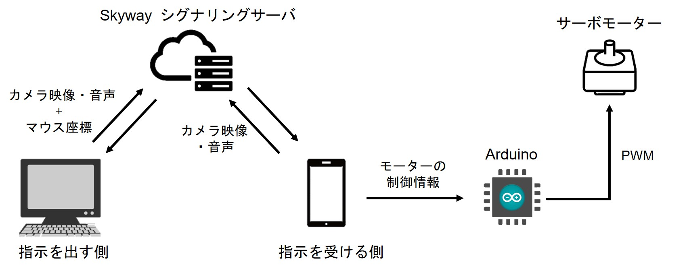

に参加しました。
オンラインということもあり、全国各地、果ては海外からの参加者も集まり、
総勢25人、9チームでの開催となりました。私たちのチームのメンバーは全員
ハッカソン初参加でしたが、ありがたいことに2位に選んでいただきました。
このサイトでは、私たちのチームが開発したシステムについて紹介します。
ハッカソンのテーマと解決したい課題
今回のハッカソンのテーマは、
リモートワークが普及した時代に必要になるツール
でした。このテーマに沿って、まずはリモートワークが普及した時代において、どのような
問題が生じるのかをチーム内で議論しました。その結果、私たちのチームは以下のコンセプトで
開発をすることに決まりました。
・ビデオ通話を介して，遠隔地の物への物理的なアクセスを可能にするシステム
まず、このコンセプトのもととなったリモートワークの問題点を説明します。
リモートワークが普及すると、社員への指示をビデオ通話でする場面が増えてくると考えます。
その際、音声やジェスチャーだけで指示が十分に伝わるのであれば問題ありません。しかし例えば、以下のように
部品から何かを組み立てる作業を遠隔で指示を受けながら行う場合、指示する側が言葉を工夫しなければ、
指示を的確に伝えることはできません。

このように、
ビデオ通話を介した指示では遠隔地の特定の対象にフォーカスをあてることが難しい
という問題があります。
私たちのアイデア
私たちは上記の問題に対し、以下のようなシステムを作ることで解決を図りました。

指示する側が相手のカメラ映像の任意の箇所をクリックすると、遠隔地の相手の環境でその場所をレーザーが
ポイントする仕組みです。ビデオ通話機能に加えてこの機能を実装することにより、これまでは難しかった
遠隔地の特定の対象にフォーカスして指示を出すことが容易になります。
システム構成
私たちの開発したシステムは、以下のような構成となっています。

指示を出す側のPCと受ける側のスマホ(Android)でカメラの映像と音声を相互に通信し、ビデオ通話を行っています。
ビデオ通話機能の実装には、リファレンスが充実しておりWebアプリとAndroidアプリで両用可能な
SkyWayというAPIを
使用しました。指示を出す側と受ける側は、Skywayのシグナリングサーバを経由して映像と音声の送受信を行っています。
また、指示を出す側のPCは、映像と音声に加え、画面がクリックされた際にはカーソルの座標を送信します。スマホ側では、
受信されたカーソルの座標情報をモーター制御のための情報に変換し、Arduinoに送信します。そして、Arduinoでサーボモータの
PWM制御を行い、レーザーポインタの角度を調整します。
成果物
以下は開発したシステムのデモ動画になります。